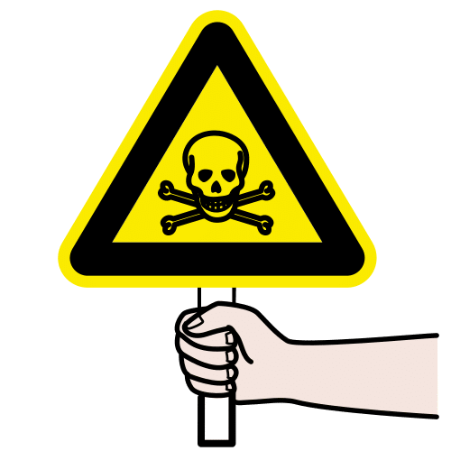
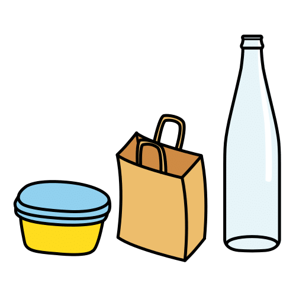
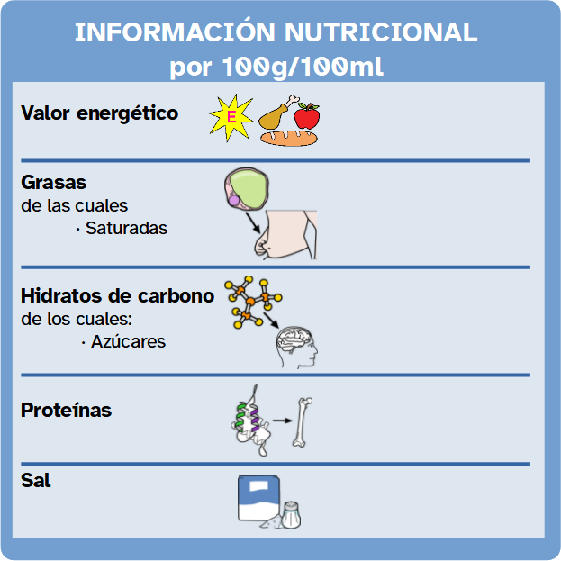
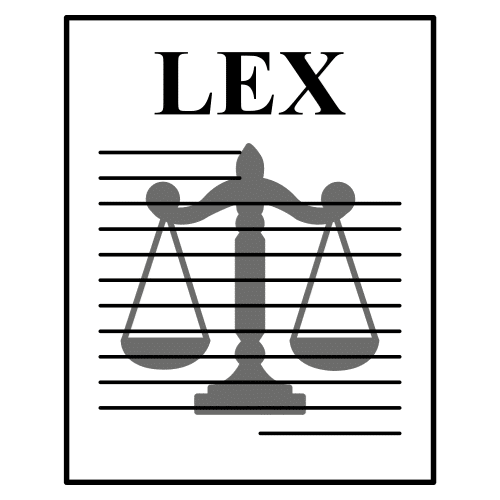
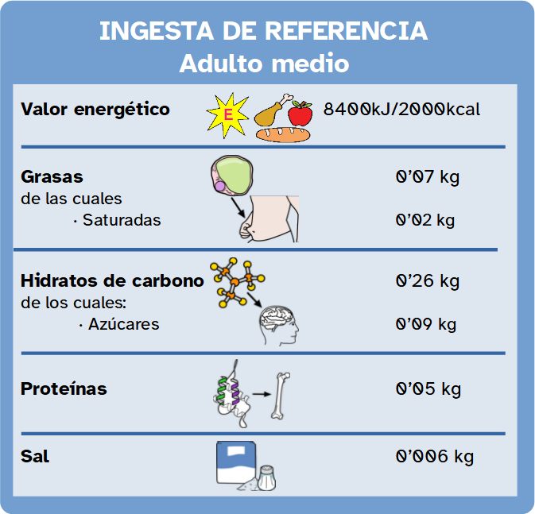

Está demostrado que una dieta equilibrada ayuda a prevenir enfermedades.
La Organización Mundial de la Salud afirma que en todo el mundo, las dietas poco saludables y la falta de actividad física, están entre los principales factores de riesgo para la salud.
Es por ello que en España, los alimentos envasados incorporan etiquetas que nos informan acerca de los nutrientes que aportan los alimentos, además de realizar recomendaciones acerca de que cantidades debemos incorporar en una dieta equilibrada.
Lee con atención el contenido de este apartado y aprenderás mucho acerca de la información que debe aparecer en el etiquetado.

Definición:
Advertir, informar o avisar a alguien de algo.
Ejemplo:
Para prevenir la aparición de anemia debes alimentarte bien.

Definición:
Alimentos introducidos en recipientes para su conservación.
Ejemplo:
Debemos evitar consumir alimentos envasados.
Lectura facilitada
Una dieta saludable ayuda a evitar que enfermemos.
La Organización Mundial de la Salud dice que la alimentación no saludable y no practicar deporte aumenta la probabilidad de enfermar.
Por eso, en España, nuestro país, los alimentos envasados tienen etiquetas en las que se indican los nutrientes que tienen y la cantidad que debemos comer.
1. Mucha información en los envases
¿Te has fijado alguna vez en la información nutricional de los alimentos?
Por ley, los alimentos envasados deben incluir una etiqueta que recoja la siguiente información en este orden:

También puede contener información acerca de cantidades de fibra, vitaminas, minerales,...

Definición:
Conjunto de derechos y deberes de los ciudadanos.
Ejemplo:
Los ciudadanos debemos cumplir las leyes.
Cardia dice: Cuidar lo que comemos es importante
La etiqueta nutricional es muy importante, ya que nos aporta información acerca de los alimentos que consumimos. De esta forma, nos ayudará a cuidar nuestra alimentación.
Recuerda que una dieta saludable previene muchas enfermedades.
La siguiente imagen muestra las cantidad diaria recomendada para un adulto de los diferentes elementos que deben aparecer obligatoriamente en la información nutricional.

Además, a la hora de decidir la compra semanal, en nuestro proyecto solidario, debes tener en cuenta que las necesidades nutricionales no son las mismas para niños, adolescentes, adultos o personas mayores.
2. Analicemos lo que comemos
En los grupos que habéis formado para el desarrollo de nuestro proyecto, debéis elegir uno de los siguientes menús e indicar si cumplen con los niveles de referencia.
Menú 1
- Desayuno: Un vaso de leche (0'125 l), una tostada (0'175 kg) con mantequilla (0'02 g)
- Media mañana: Una manzana (0'15 kg)
- Almuerzo: Ensalada (0'1 kg), un filete de salmón (0'2 kg), judías cocidas (0,1 kg), una ración de melón (0,15 kg)
- Merienda: Un yogur líquido (0'1 kg)
- Cena: Crema de verduras(0,15 ml), tortilla francesa, frutos secos (0,5 kg)
Menú 2
- Desayuno: Un vaso de zumo de naranja (0'125 l), dos magdalenas (0'60 kg)
- Media mañana: Un plátano (0'20 kg)
- Almuerzo: Salmorejo (0,2 kg), filete de pollo (0'15 kg), patatas cocidas (0'2 kg), dos mandarinas (0'25 kg)
- Merienda: Barrita de cereales (0'25 Kg)
- Cena: Una rebanada de pan (0'1 kg) con dos lonchas de jamón cocido (0'125gr), un yogur (0'125kg)
Para el cálculo de la información nutricional podéis utilizar una calculadora nutricional o utilizar el documento que podemos encontrar al final de la página.
Calculadora nutricional
A continuación, diseña un menú saludable y realiza la lista de compra necesaria para poder preparar en casa este menú, deberás tener en cuenta la presentación y envasado de cada producto.
¿Cuál sería el precio total de la compra?
¿Cuál sería el precio de cada menú?
Accede al documento la ficha de alimentos en formato pdf para ver mejor las tarjetas de alimentos.
No te olvides guardarlo e imprimirlo si hace falta.